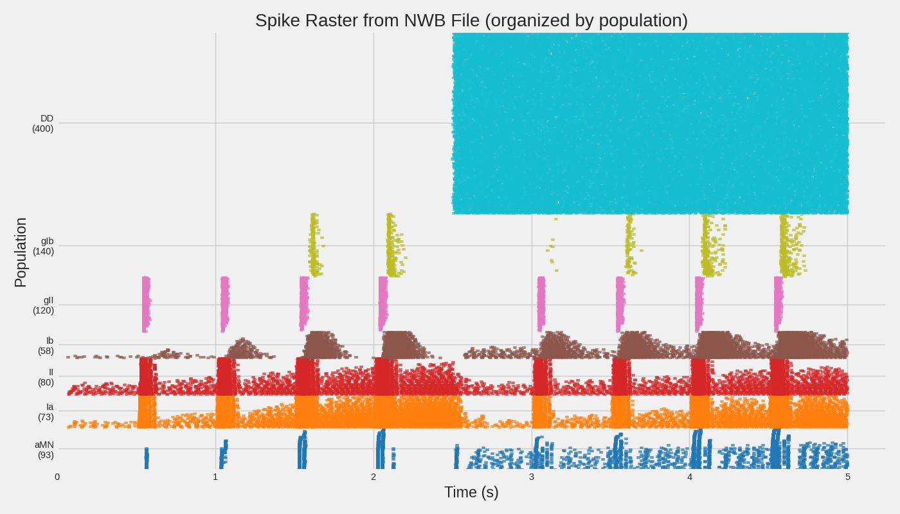
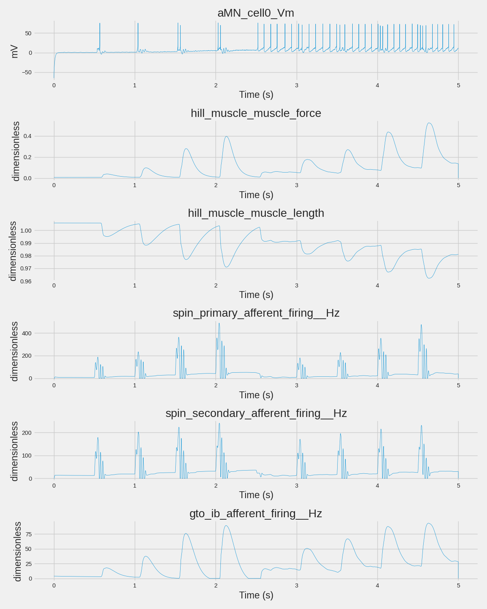

Note
Go to the end to download the full example code.
Loading and Inspecting NWB Data#
This example demonstrates how to load, validate, and inspect NWB (Neurodata Without Borders) files created by MyoGen simulations.
NWB is a standardized data format for neurophysiology that enables: - Data sharing: Upload to DANDI Archive for community access - Interoperability: Compatible with many neuroscience analysis tools - Validation: Built-in schema validation ensures data integrity - Metadata: Rich experimental metadata travels with the data
Learning Objectives#
Validate NWB files: Use NWBInspector to check file compliance
Load NWB data: Read simulation results back into Python
Explore data structure: Navigate the hierarchical NWB format
Extract signals: Access spike trains, analog signals, and metadata
Compare formats: Understand NWB vs pickle tradeoffs
Prerequisites#
This example requires an NWB file from example 11 (spinal_network_results.nwb).
Note
If you haven’t run example 11, this example will create a minimal NWB file for demonstration purposes.
Import Libraries#
from pathlib import Path
import matplotlib.pyplot as plt
import numpy as np
plt.style.use("fivethirtyeight")
Import NWB Libraries#
import pynwb
from pynwb import NWBHDF5IO
from nwbinspector import inspect_nwbfile
from nwbinspector.inspector_tools import format_messages
print(f"(OK) PyNWB version: {pynwb.__version__}")
print("(OK) NWBInspector available")
(OK) PyNWB version: 3.1.3
(OK) NWBInspector available
Locate NWB File#
Look for the NWB file created by example 11. If not found, we’ll create a minimal example file for demonstration.
save_path = Path(r"./results")
nwb_filepath = save_path / "spinal_network_results.nwb"
if not nwb_filepath.exists():
print(f"\n(WARN) NWB file not found: {nwb_filepath}")
print("Creating a minimal demonstration NWB file...")
# Create a minimal NWB file for demonstration
from datetime import datetime
import quantities as pq
from neo import AnalogSignal, Block, Segment, SpikeTrain
from myogen.utils.nwb import export_to_nwb
# Create sample data
demo_block = Block(name="Demo_Simulation")
segment = Segment(name="Demo_Segment")
demo_block.segments.append(segment)
# Add sample spike trains
for i in range(5):
spike_times = np.sort(np.random.uniform(0, 1000, size=50)) * pq.ms
st = SpikeTrain(spike_times, t_stop=1000 * pq.ms, units="ms")
st.annotate(neuron_id=i, population="aMN")
segment.spiketrains.append(st)
# Add sample analog signal
time_points = 10000
signal_data = np.sin(np.linspace(0, 10 * np.pi, time_points)).reshape(-1, 1)
analog = AnalogSignal(
signal_data * pq.mV,
sampling_rate=10000 * pq.Hz,
name="muscle_force",
)
segment.analogsignals.append(analog)
# Export to NWB
save_path.mkdir(exist_ok=True)
export_to_nwb(
demo_block,
nwb_filepath,
session_description="Demonstration NWB file for MyoGen tutorial",
institution="MyoGen Tutorial",
)
print(f"(OK) Created demonstration NWB file: {nwb_filepath}")
else:
print(f"\n(OK) Found NWB file: {nwb_filepath}")
print(f" Size: {nwb_filepath.stat().st_size / 1024:.1f} KB")
(OK) Found NWB file: results/spinal_network_results.nwb
Size: 188454.4 KB
Step 1: Validate NWB File#
Before loading, it’s good practice to validate the NWB file using NWBInspector. This checks for schema compliance and best practices.
print("\n" + "=" * 60)
print("STEP 1: NWB FILE VALIDATION")
print("=" * 60)
print(f"\nValidating: {nwb_filepath.name}")
print("-" * 40)
# Run inspection
messages = list(inspect_nwbfile(nwbfile_path=str(nwb_filepath)))
if not messages:
print("✓ No issues found - file is valid!")
else:
# Categorize messages by severity
critical = [m for m in messages if m.importance.name == "CRITICAL"]
errors = [m for m in messages if m.importance.name == "ERROR"]
warnings = [m for m in messages if m.importance.name == "WARNING"]
best_practice = [m for m in messages if m.importance.name == "BEST_PRACTICE_VIOLATION"]
print(f"Found {len(messages)} message(s):")
if critical:
print(f" ✗ Critical: {len(critical)}")
if errors:
print(f" ✗ Errors: {len(errors)}")
if warnings:
print(f" ⚠ Warnings: {len(warnings)}")
if best_practice:
print(f" ○ Best practice suggestions: {len(best_practice)}")
# Show formatted messages
print("\nDetails:")
print(format_messages(messages[:10])) # Limit to first 10
if len(messages) > 10:
print(f" ... and {len(messages) - 10} more messages")
============================================================
STEP 1: NWB FILE VALIDATION
============================================================
Validating: spinal_network_results.nwb
----------------------------------------
Found 26 message(s):
✗ Critical: 1
Details:
['**************************************************', 'NWBInspector Report Summary', '', 'Timestamp: 2026-04-19 07:03:38.088406+00:00', 'Platform: Linux-6.17.0-1010-azure-x86_64-with-glibc2.39', 'NWBInspector version: 0.6.5', '', 'Found 10 issues over 1 files:', ' 10 - BEST_PRACTICE_SUGGESTION', '**************************************************', '', '', '0 results/spinal_network_results.nwb', '=====================================', '', "0.0 Importance.BEST_PRACTICE_SUGGESTION: check_description - 'TimeSeries' object at location '/acquisition/spin_secondary_afferent_firing__Hz'", " Message: Description ('no description') is a placeholder.", '', "0.1 Importance.BEST_PRACTICE_SUGGESTION: check_description - 'TimeSeries' object at location '/acquisition/spin_primary_afferent_firing__Hz'", " Message: Description ('no description') is a placeholder.", '', "0.2 Importance.BEST_PRACTICE_SUGGESTION: check_description - 'TimeSeries' object at location '/acquisition/spin_intrafusal_tensions'", " Message: Description ('no description') is a placeholder.", '', "0.3 Importance.BEST_PRACTICE_SUGGESTION: check_description - 'TimeSeries' object at location '/acquisition/spin_chain_activation'", " Message: Description ('no description') is a placeholder.", '', "0.4 Importance.BEST_PRACTICE_SUGGESTION: check_description - 'TimeSeries' object at location '/acquisition/spin_bag2_activation'", " Message: Description ('no description') is a placeholder.", '', "0.5 Importance.BEST_PRACTICE_SUGGESTION: check_description - 'TimeSeries' object at location '/acquisition/spin_bag1_activation'", " Message: Description ('no description') is a placeholder.", '', "0.6 Importance.BEST_PRACTICE_SUGGESTION: check_description - 'TimeSeries' object at location '/acquisition/hill_muscle_type2_activation'", " Message: Description ('no description') is a placeholder.", '', "0.7 Importance.BEST_PRACTICE_SUGGESTION: check_description - 'TimeSeries' object at location '/acquisition/hill_muscle_type1_activation'", " Message: Description ('no description') is a placeholder.", '', "0.8 Importance.BEST_PRACTICE_SUGGESTION: check_description - 'TimeSeries' object at location '/acquisition/hill_muscle_muscle_torque'", " Message: Description ('no description') is a placeholder.", '', "0.9 Importance.BEST_PRACTICE_SUGGESTION: check_description - 'TimeSeries' object at location '/acquisition/hill_muscle_muscle_length'", " Message: Description ('no description') is a placeholder.", '']
... and 16 more messages
Step 2: Load NWB File#
Open the NWB file and explore its structure. NWB uses HDF5 format internally, which supports efficient storage of large datasets.
print("\n" + "=" * 60)
print("STEP 2: LOADING NWB FILE")
print("=" * 60)
# Open the NWB file
io = NWBHDF5IO(str(nwb_filepath), mode="r")
nwbfile = io.read()
print(f"\nNWB File: {nwbfile.identifier}")
print(f"Session: {nwbfile.session_description}")
print(f"Created: {nwbfile.session_start_time}")
if nwbfile.institution:
print(f"Institution: {nwbfile.institution}")
if nwbfile.lab:
print(f"Lab: {nwbfile.lab}")
if nwbfile.keywords:
print(f"Keywords: {', '.join(nwbfile.keywords)}")
============================================================
STEP 2: LOADING NWB FILE
============================================================
NWB File: d868c2ed-39bc-4cb9-af19-7029fd695db5
Session: MyoGen spinal network simulation with systematic tendon tap protocol. Two-phase design: (1) Reflex gain modulation with varying gamma drive, (2) Reflex-voluntary interaction with sinusoidal cortical drive.
Created: 2026-04-19 07:02:49.568093+00:00
Institution: MyoGen Framework
Lab: Neuromuscular Simulation
Keywords: MyoGen, spinal network, motor neuron, stretch reflex, tendon tap, proprioception, EMG simulation
Step 3: Explore Data Structure#
NWB organizes data hierarchically. Let’s explore what’s available.
print("\n" + "=" * 60)
print("STEP 3: DATA STRUCTURE")
print("=" * 60)
# Acquisition data (raw recordings)
print("\n📁 Acquisition (raw data):")
if nwbfile.acquisition:
for name, data in nwbfile.acquisition.items():
print(f" └─ {name}: {type(data).__name__}")
if hasattr(data, "data"):
print(f" Shape: {data.data.shape if hasattr(data.data, 'shape') else 'N/A'}")
if hasattr(data, "unit"):
print(f" Unit: {data.unit}")
else:
print(" (empty)")
# Processing modules
print("\n📁 Processing modules:")
if nwbfile.processing:
for mod_name, module in nwbfile.processing.items():
print(f" └─ {mod_name}:")
for container_name in module.data_interfaces:
container = module.data_interfaces[container_name]
print(f" └─ {container_name}: {type(container).__name__}")
else:
print(" (empty)")
# Units (spike times)
print("\n📁 Units (spike data):")
if nwbfile.units is not None and len(nwbfile.units) > 0:
n_units = len(nwbfile.units.id[:])
print(f" └─ {n_units} units recorded")
# Show column names
columns = list(nwbfile.units.colnames)
print(f" Columns: {', '.join(columns[:5])}")
if len(columns) > 5:
print(f" ... and {len(columns) - 5} more")
else:
print(" (empty)")
# Stimulus
print("\n📁 Stimulus:")
if nwbfile.stimulus:
for name, data in nwbfile.stimulus.items():
print(f" └─ {name}: {type(data).__name__}")
else:
print(" (empty)")
============================================================
STEP 3: DATA STRUCTURE
============================================================
📁 Acquisition (raw data):
└─ aMN_cell0_Vm: TimeSeries
Shape: (1000001, 1)
Unit: mV
└─ aMN_cell10_Vm: TimeSeries
Shape: (1000001, 1)
Unit: mV
└─ aMN_cell15_Vm: TimeSeries
Shape: (1000001, 1)
Unit: mV
└─ aMN_cell20_Vm: TimeSeries
Shape: (1000001, 1)
Unit: mV
└─ aMN_cell30_Vm: TimeSeries
Shape: (1000001, 1)
Unit: mV
└─ aMN_cell40_Vm: TimeSeries
Shape: (1000001, 1)
Unit: mV
└─ aMN_cell50_Vm: TimeSeries
Shape: (1000001, 1)
Unit: mV
└─ aMN_cell5_Vm: TimeSeries
Shape: (1000001, 1)
Unit: mV
└─ aMN_cell60_Vm: TimeSeries
Shape: (1000001, 1)
Unit: mV
└─ aMN_cell70_Vm: TimeSeries
Shape: (1000001, 1)
Unit: mV
└─ gto_ib_afferent_firing__Hz: TimeSeries
Shape: (1000001, 1)
Unit: dimensionless
└─ hill_muscle_muscle_force: TimeSeries
Shape: (1000001, 1)
Unit: dimensionless
└─ hill_muscle_muscle_length: TimeSeries
Shape: (1000001, 1)
Unit: dimensionless
└─ hill_muscle_muscle_torque: TimeSeries
Shape: (1000001, 1)
Unit: dimensionless
└─ hill_muscle_type1_activation: TimeSeries
Shape: (1000001, 1)
Unit: dimensionless
└─ hill_muscle_type2_activation: TimeSeries
Shape: (1000001, 1)
Unit: dimensionless
└─ spin_bag1_activation: TimeSeries
Shape: (1000001, 1)
Unit: dimensionless
└─ spin_bag2_activation: TimeSeries
Shape: (1000001, 1)
Unit: dimensionless
└─ spin_chain_activation: TimeSeries
Shape: (1000001, 1)
Unit: dimensionless
└─ spin_intrafusal_tensions: TimeSeries
Shape: (3, 1000001)
Unit: dimensionless
└─ spin_primary_afferent_firing__Hz: TimeSeries
Shape: (1000001, 1)
Unit: dimensionless
└─ spin_secondary_afferent_firing__Hz: TimeSeries
Shape: (1000001, 1)
Unit: dimensionless
📁 Processing modules:
(empty)
📁 Units (spike data):
└─ 964 units recorded
Columns: _name, segment, block, spike_times, obs_intervals
📁 Stimulus:
(empty)
Step 4: Extract and Plot Spike Data#
If the NWB file contains spike data, let’s extract and visualize it.
print("\n" + "=" * 60)
print("STEP 4: EXTRACTING SPIKE DATA")
print("=" * 60)
if nwbfile.units is not None and len(nwbfile.units) > 0:
# Get unit info - names contain population info like "aMN_cell0_spikes"
unit_ids = nwbfile.units.id[:]
unit_names = nwbfile.units["_name"][:] if "_name" in nwbfile.units.colnames else None
print(f"\nFound {len(unit_ids)} units")
# Group units by population (parse from name like "aMN_cell0_spikes")
populations = {}
for i, unit_id in enumerate(unit_ids):
name = unit_names[i] if unit_names is not None else f"unit_{unit_id}"
# Parse population from "popName_cellN_spikes" format
if "_cell" in name:
pop_name = name.split("_cell")[0]
else:
pop_name = "unknown"
if pop_name not in populations:
populations[pop_name] = []
spike_times = nwbfile.units.get_unit_spike_times(unit_id)
populations[pop_name].append((name, spike_times))
print(f"Populations found: {list(populations.keys())}")
for pop, units in populations.items():
total_spikes = sum(len(st) for _, st in units)
print(f" {pop}: {len(units)} units, {total_spikes} total spikes")
# Create raster plot organized by population (like example 11)
pop_order = ["aMN", "Ia", "II", "Ib", "gII", "gIb"] # Preferred order
sorted_pops = [p for p in pop_order if p in populations]
sorted_pops += [p for p in populations if p not in sorted_pops] # Add any others
fig, ax = plt.subplots(figsize=(14, 8))
colors = plt.cm.tab10(np.linspace(0, 1, len(sorted_pops)))
y_offset = 0
y_ticks = []
y_labels = []
for pop_idx, pop_name in enumerate(sorted_pops):
units = populations[pop_name]
pop_start_y = y_offset
for unit_name, spike_times in units:
if len(spike_times) > 0:
ax.scatter(
spike_times,
np.ones_like(spike_times) * y_offset,
marker="|",
s=8,
color=colors[pop_idx],
alpha=0.7,
)
y_offset += 1
# Add population label at midpoint
y_ticks.append((pop_start_y + y_offset) / 2)
y_labels.append(f"{pop_name}\n({len(units)})")
ax.set_xlabel("Time (s)")
ax.set_ylabel("Population")
ax.set_yticks(y_ticks)
ax.set_yticklabels(y_labels)
ax.set_title("Spike Raster from NWB File (organized by population)")
ax.set_xlim(0, None)
ax.set_ylim(-1, y_offset)
plt.tight_layout()
plt.savefig(save_path / "nwb_spike_raster.png", dpi=150, bbox_inches="tight")
plt.show()
print(f"\n(OK) Saved raster plot to: {save_path / 'nwb_spike_raster.png'}")
else:
print("\nNo spike data found in this NWB file")

============================================================
STEP 4: EXTRACTING SPIKE DATA
============================================================
Found 964 units
Populations found: ['DD', 'aMN', 'Ia', 'II', 'Ib', 'gII', 'gIb']
DD: 400 units, 39907 total spikes
aMN: 93 units, 2081 total spikes
Ia: 73 units, 11858 total spikes
II: 80 units, 8338 total spikes
Ib: 58 units, 4633 total spikes
gII: 120 units, 1937 total spikes
gIb: 140 units, 886 total spikes
(OK) Saved raster plot to: results/nwb_spike_raster.png
Step 5: Extract and Plot Analog Signals#
Let’s look at any continuous time series data in the file.
print("\n" + "=" * 60)
print("STEP 5: EXTRACTING ANALOG SIGNALS")
print("=" * 60)
def get_timestamps(data):
"""Get timestamps from NWB TimeSeries, handling both explicit and rate-based."""
if data.timestamps is not None:
return data.timestamps[:]
elif data.rate is not None:
# Generate timestamps from starting_time and rate
n_samples = data.data.shape[0]
start = data.starting_time if data.starting_time is not None else 0.0
return np.linspace(start, start + n_samples / data.rate, n_samples)
else:
# Fallback to sample indices
return np.arange(data.data.shape[0])
# Check acquisition for time series
analog_signals = []
for name, data in nwbfile.acquisition.items():
if hasattr(data, "data"):
analog_signals.append((name, data))
print(f"\nFound {len(analog_signals)} analog signals in acquisition:")
for name, data in analog_signals[:10]: # Show first 10
print(f" - {name}: shape={data.data.shape}, unit={getattr(data, 'unit', 'N/A')}")
if len(analog_signals) > 10:
print(f" ... and {len(analog_signals) - 10} more")
# Select representative signals from different categories
signals_to_plot = []
signal_dict = {name: data for name, data in analog_signals}
# Pick one from each category for a representative view
representative_patterns = [
"aMN_cell0_Vm", # Membrane potential
"hill_muscle_muscle_force", # Muscle force
"hill_muscle_muscle_length", # Muscle length
"spin_primary_afferent_firing__Hz", # Spindle Ia
"spin_secondary_afferent_firing__Hz", # Spindle II
"gto_ib_afferent_firing__Hz", # GTO Ib
]
for pattern in representative_patterns:
if pattern in signal_dict:
signals_to_plot.append((pattern, signal_dict[pattern]))
# Fallback to first 4 if no matches
if not signals_to_plot:
signals_to_plot = analog_signals[:4]
if signals_to_plot:
print(f"\nPlotting {len(signals_to_plot)} representative signals...")
fig, axes = plt.subplots(len(signals_to_plot), 1, figsize=(12, 2.5 * len(signals_to_plot)))
if len(signals_to_plot) == 1:
axes = [axes]
for ax, (name, data) in zip(axes, signals_to_plot):
values = data.data[:]
if values.ndim > 1:
values = values[:, 0] # Take first channel if multi-channel
timestamps = get_timestamps(data)
ax.plot(timestamps, values, linewidth=0.5)
ax.set_xlabel("Time (s)")
ax.set_ylabel(f"{getattr(data, 'unit', 'a.u.')}")
ax.set_title(name)
plt.tight_layout()
plt.savefig(save_path / "nwb_analog_signals.png", dpi=150, bbox_inches="tight")
plt.show()
print(f"(OK) Saved analog signal plot to: {save_path / 'nwb_analog_signals.png'}")
else:
print("\nNo analog signals found in acquisition")

============================================================
STEP 5: EXTRACTING ANALOG SIGNALS
============================================================
Found 22 analog signals in acquisition:
- aMN_cell0_Vm: shape=(1000001, 1), unit=mV
- aMN_cell10_Vm: shape=(1000001, 1), unit=mV
- aMN_cell15_Vm: shape=(1000001, 1), unit=mV
- aMN_cell20_Vm: shape=(1000001, 1), unit=mV
- aMN_cell30_Vm: shape=(1000001, 1), unit=mV
- aMN_cell40_Vm: shape=(1000001, 1), unit=mV
- aMN_cell50_Vm: shape=(1000001, 1), unit=mV
- aMN_cell5_Vm: shape=(1000001, 1), unit=mV
- aMN_cell60_Vm: shape=(1000001, 1), unit=mV
- aMN_cell70_Vm: shape=(1000001, 1), unit=mV
... and 12 more
Plotting 6 representative signals...
(OK) Saved analog signal plot to: results/nwb_analog_signals.png
Step 6: Compare with Pickle Format#
Let’s compare loading from NWB vs the original pickle format.
print("\n" + "=" * 60)
print("STEP 6: NWB vs PICKLE COMPARISON")
print("=" * 60)
pickle_filepath = save_path / "spinal_network_results.pkl"
print("\nFormat Comparison:")
print("-" * 50)
print(f"{'Feature':<25} {'NWB':<15} {'Pickle':<15}")
print("-" * 50)
# File existence
nwb_exists = "✓" if nwb_filepath.exists() else "✗"
pkl_exists = "✓" if pickle_filepath.exists() else "✗"
print(f"{'File exists':<25} {nwb_exists:<15} {pkl_exists:<15}")
# File size
if nwb_filepath.exists():
nwb_size = f"{nwb_filepath.stat().st_size / 1024:.1f} KB"
else:
nwb_size = "N/A"
if pickle_filepath.exists():
pkl_size = f"{pickle_filepath.stat().st_size / 1024:.1f} KB"
else:
pkl_size = "N/A"
print(f"{'File size':<25} {nwb_size:<15} {pkl_size:<15}")
# Format properties
print(f"{'Standardized format':<25} {'Yes':<15} {'No':<15}")
print(f"{'Schema validation':<25} {'Yes':<15} {'No':<15}")
print(f"{'Cross-language support':<25} {'Yes (HDF5)':<15} {'Python only':<15}")
print(f"{'DANDI Archive upload':<25} {'Yes':<15} {'No':<15}")
print(f"{'Metadata schema':<25} {'Rich':<15} {'Flexible':<15}")
print(f"{'Load speed':<25} {'Fast':<15} {'Fast':<15}")
print("-" * 50)
print("\nRecommendations:")
print(" • Use NWB for: Sharing data, long-term archival, interoperability")
print(" • Use Pickle for: Quick local saves, complex Python objects, development")
============================================================
STEP 6: NWB vs PICKLE COMPARISON
============================================================
Format Comparison:
--------------------------------------------------
Feature NWB Pickle
--------------------------------------------------
File exists ✓ ✓
File size 188454.4 KB 188351.0 KB
Standardized format Yes No
Schema validation Yes No
Cross-language support Yes (HDF5) Python only
DANDI Archive upload Yes No
Metadata schema Rich Flexible
Load speed Fast Fast
--------------------------------------------------
Recommendations:
• Use NWB for: Sharing data, long-term archival, interoperability
• Use Pickle for: Quick local saves, complex Python objects, development
Cleanup#
Close the NWB file handle.
io.close()
print("\n(OK) NWB file closed")
(OK) NWB file closed
Summary#
This example demonstrated:
Validation: Using NWBInspector to check file compliance
Loading: Opening NWB files with PyNWB
Structure exploration: Navigating the hierarchical format
Data extraction: Accessing spikes and analog signals
Format comparison: Understanding NWB vs pickle tradeoffs
For more information:
NWB documentation: https://pynwb.readthedocs.io/
NWBInspector: https://nwbinspector.readthedocs.io/
DANDI Archive: https://dandiarchive.org/
NWB Overview: https://nwb-overview.readthedocs.io/
print("\n" + "=" * 60)
print("EXAMPLE COMPLETE")
print("=" * 60)
print("\nNext steps:")
print(" 1. Run example 11 to generate full simulation NWB file")
print(" 2. Explore your data with NWB Widgets: pip install nwbwidgets")
print(" 3. Upload to DANDI Archive for sharing: https://dandiarchive.org/")
============================================================
EXAMPLE COMPLETE
============================================================
Next steps:
1. Run example 11 to generate full simulation NWB file
2. Explore your data with NWB Widgets: pip install nwbwidgets
3. Upload to DANDI Archive for sharing: https://dandiarchive.org/
Total running time of the script: (0 minutes 6.098 seconds)